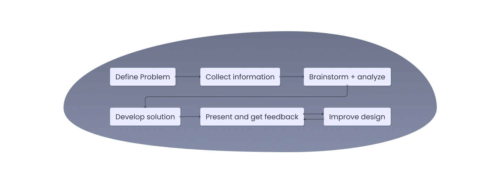

- Move-out from the hostel stress-free.
- Affordable and easily accessible for those who are unfamiliar with the area and don't know where to get necessities.
- Gain an advantage by exchanging books and notes from seniors.
- Make some money out of used products.
Campus Buy

Project Overview
This project aims to address the challenges faced by students preparing to move in or move out in for further studies and often find themselves burdened with unused items when moving out of colleges. Similarly, incoming students struggle to find affordable necessities. The solution is to develop an app facilitating the buying, selling, and donation of used items among students.
Problem statement
While younger students look for educational materials, older students in a college try to sell or give them before leaving. The deficiency of an effective platform necessitates a solution that makes transactions within the educational community smooth.
Goals
An application that can help the user:
Design process
Define and Research
Through thorough research on buying and selling second-hand products, I empathized with users by understanding their needs for affordability and sustainability, identifying challenges such as trust issues and pricing concerns, recognizing behaviors like online preference and negotiation tactics.
This involved review of exciting platforms like SUNOBOOKFLICK website and relevant online content related to buying and selling of products. These are the insights of the research
- User wants to move in without the hassle of getting basics like book rack, shoe rack, study table, mattresses, kitchen utensils, etc
- Users who are newcomers aren’t aware of the right places to buy basic stuff so they want an affordable and convenient way to buy stuff.
- User needs a trust worthy platform which has proper details about items and sellers.
- User wants to bargain about items.
- User wants to get ahead by swapping college notes and books.
- User wants to move out from the hostel stress free.
I proceeded to conduct interviews to explore about the individuals who are currently studying or recent graduates. These interviews were designed to understand more about the user behaviors and expectation while selling and buying.
Affinity Mapping
After user interviews an affinity mapping process was done to analyze and organize the available data. I organized the data into Pain points, Exchange mode, Pricing, Use cases, Expected features. This helped me under important pain points and design the app to solve these pain points.
Target audiance & User personas
Teenagers often join college between the ages of 16 and 20, and some go on to pursue master’s degrees beyond that. After gathering data, I discovered that the target audience is between 17–25 age.
Using the gather data I understood the major pain points, expectations and goals of the target audience, then I created user personas for both buyer and seller. These personas helped me design the app with better user experience.
.png)
.png)
User flows
I had a rough idea of how the app will work. I was able to determine each step the users will take to solve the problem by mapping user flows.
Information Architecture
Using the above flow, I created Information architecture which includes all possible screens the user might need to complete all the necessary action to buy or sell a product.
Wireframes
This was the first step to help me outline the app and visually imagine it. I focused on both user experience and UI.
Low fidelity wire-frames
High fidelity wire-frames
Color and Typography
Color
I've decided to go with the dark blue color to give emotions such as trust, reliability, and discover.
Font
I choose Poppins for its modern geometric style, providing a clean look with consistent and readable appearance. The decision to use a single font simplifies the design for a clean design.

Final design
On boarding
When the user initially opens the app, they will see a flash screen that provides an overview of the app! Users must then register or log in using their email address or cellphone number. Giving permission for location is essential for creating a better user experience for buyers and sellers.
Home and Product details screens
Upon enabling location services, users are seamlessly directed to the home page. Here, a thoughtfully designed interface awaits, featuring a prominent search bar for effortless product discovery. A user-friendly experience is ensured via category selections, which assist quick navigation.
When users go into the product specifics, they are presented with extensive information. Users may easily express their interest in a product to the seller by using the integrated direct chat tool, which facilitates smooth conversation. The goal of the product details page is to give users the knowledge and resources they need to make wise decisions and start a direct line of contact for a smooth experience.
Sell product screen
If any user wants to sell the item he/she has to add the details of the product like photos, description, price, category etc by clicking on the + button and publish it.
My orders and Chats screens
My orders screen contains all the products the user has purchased and a search bar for easy finding. It contains card which showcase product name, price and small description about product, after clicking on card it give all the details about the product.
Chat screen contains 3 sections for All chats, sold and bought which helps the user to easily navigation and a search bar for quick find.
Usability testing
With the initial prototype which were ready for testing, the participants were given specific tasks to complete, such as listing a product for sale, searching for a pair Nike shoes, negotiating with a seller, or add a product to wishlist. And as they navigated through the app, I observed their interactions and noted any areas of confusion or difficulty.
By the end of the testing sessions, I had gathered valuable insights from participants and identified several areas for improvement. Which include change of icon for delete, addition for new screen customer support, change in label for product available in, rename the app to [Student swap].
Goals achieved
- Users can now trade products with ease.
- Gave users a hassle free way to move in or move out of hostel.
Future scope
- Add premium verion design with door step delivery.
- Add feature which allows users to compare upto 3 products side by side.